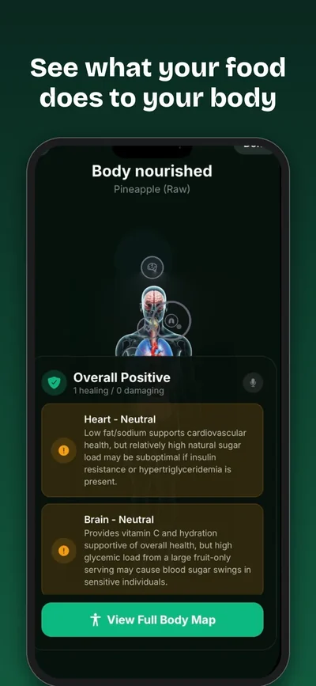
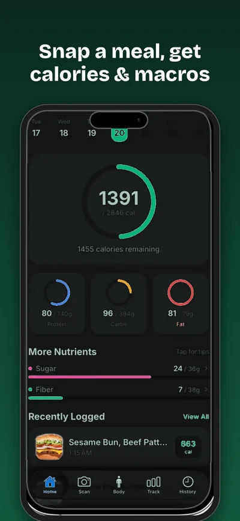
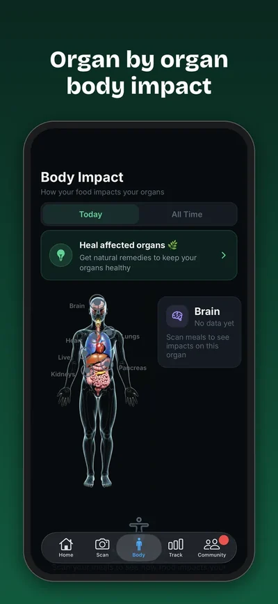
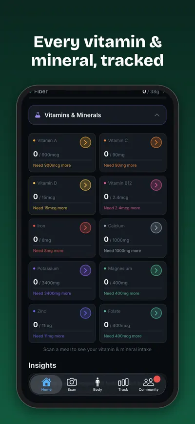
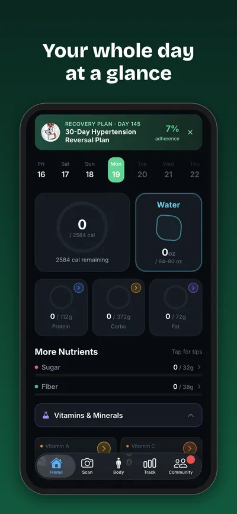
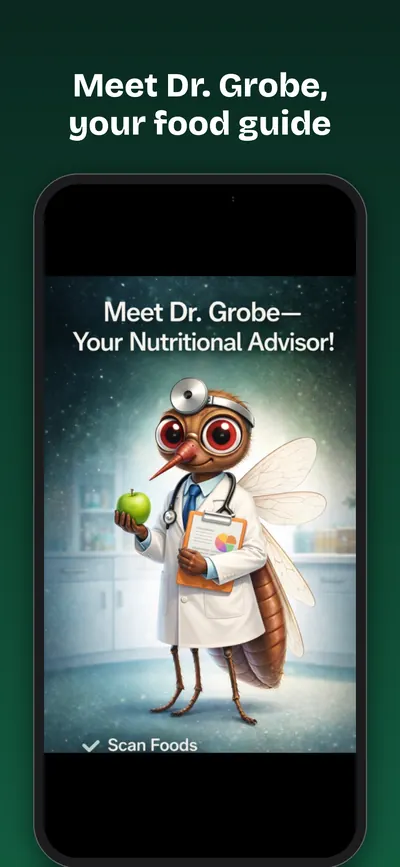

Snap your food. See what it does to your body.
One photo gives you calories, macros, vitamins and minerals, plus an organ-by-organ map of how that meal may affect your heart, gut, brain and more.

Nutrition tracking, minus the typing
No barcodes, no endless food search. Point your camera and Grobe does the rest.

Snap a meal, get calories & macros
Grobe's AI identifies what's on your plate and estimates calories, protein, carbs and fat in seconds.
- Daily calorie ring and macro goals
- Recently logged meals at a glance

See how food may affect your organs
The body impact map highlights how each meal may support or strain your heart, brain, liver, gut and more, explained in plain language.

Every vitamin & mineral, tracked
Go beyond calories. Spot gaps in iron, magnesium, vitamin D, potassium and more, meal by meal.

Your whole day at a glance, plus a monthly challenge
Track calories, water and nutrients in one view. Earn XP for healthy meals in the monthly Health Challenge. The leaderboard resets on the 1st, so everyone gets a fresh start.

Meet Dr. Grobe, your food guide
A friendly in-app guide who explains your results and helps you make a better choice next time.
How it works
From plate to insight in three steps.
Snap
Take a photo of your breakfast, lunch, dinner or snack.
Analyze
The AI identifies the food and estimates calories, macros and micronutrients.
Understand
See what the meal may mean for your body, then track your day and earn XP.
Inside the app
Real screens from Grobe on iPhone.
Loved on the App Store
Rated 4.96 out of 5 from 24 US ratings.
“I lost 14 pounds in 25 days with this app”JR Andino, App Store review “I lost weight”
Individual results vary.
people have used Grobe to understand their food.
Frequently asked questions
How does Grobe count calories from a photo?
Take a photo of your meal. Grobe's AI identifies the foods and estimates calories, protein, carbs, fat, vitamins and minerals in seconds. You can review the result before logging it.
Is Grobe free?
Grobe is free to download on the App Store. Optional upgrades are available inside the app.
What is the body impact map?
After you log a meal, Grobe shows which organs, like your heart, brain, liver and gut, the food may support or strain, with a short plain-language explanation for each.
What is the monthly Health Challenge?
You earn XP for every healthy meal you log and climb a community leaderboard. It resets on the 1st of each month so everyone gets a fresh start.
Who is Dr. Grobe?
Dr. Grobe is the app's friendly guide who helps explain your nutrition results. Dr. Grobe is a character, not a real doctor.
Is Grobe available on Android?
Grobe is currently available for iPhone on the App Store.
Is Grobe medical advice?
No. Grobe provides general nutrition information and estimates only. It is not medical advice. Talk to a qualified healthcare professional about your health.